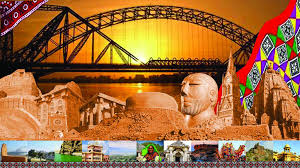
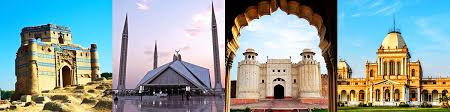
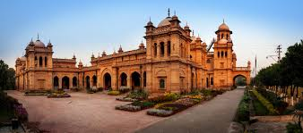
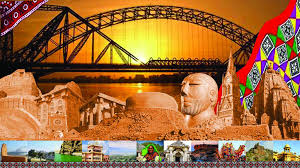
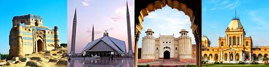
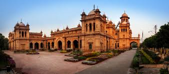

In the first half of the 19th century, the region was appropriated by the East India Company, followed, after 1857, by 90 years of direct British rule, and ending with the creation of Pakistan in 1947, through the efforts, among others, of its future national poet Allama Iqbal and its founder, Muhammad Ali Jinnah.
 




